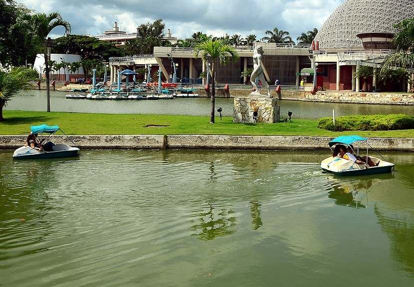
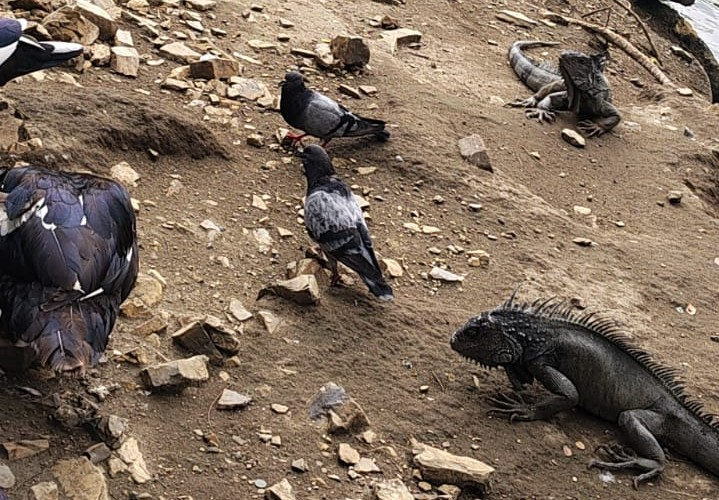
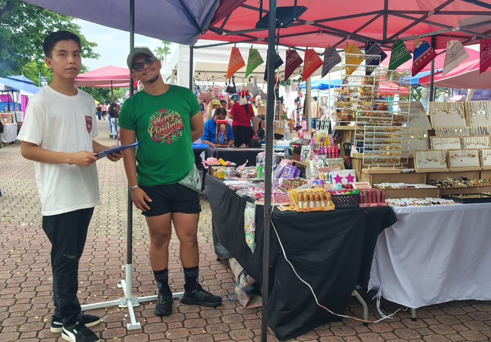
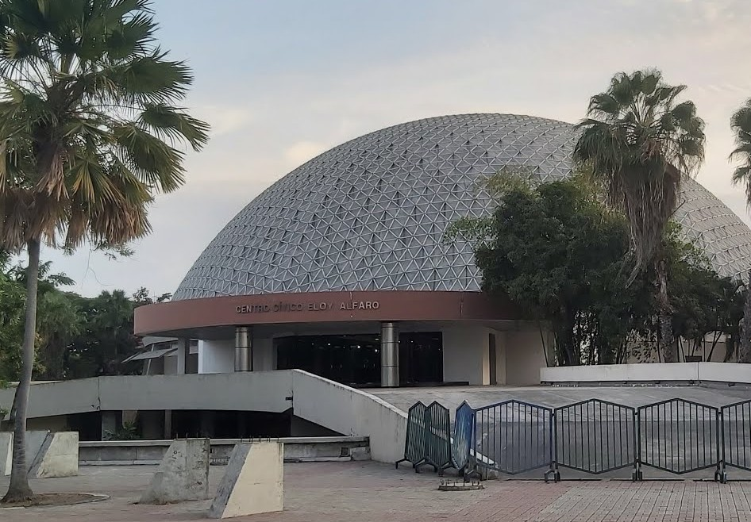
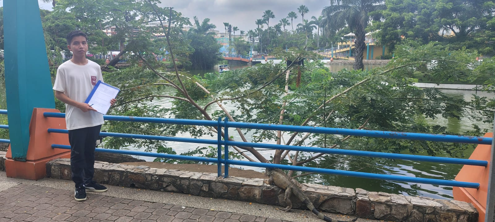

Paseos en Bote
Disfruta de la fauna marina y un recorrido recreativo en familia.
Espacio de recreación, cultura y naturaleza en Guayaquil

Disfruta de la fauna marina y un recorrido recreativo en familia.

Conecta con la biodiversidad local y las áreas verdes del parque.

Espacios dedicados a artesanos y emprendedores locales en fechas festivas.

Presentaciones artísticas y teatrales abiertas a toda la comunidad.
Zonas seguras para el descanso, el esparcimiento y alejarse de la rutina.

Ubicado en la Av. Quito y Bolivia (Parroquia Ximena), el Parque Forestal es uno de los principales espacios públicos de Guayaquil dedicados al esparcimiento y la vida familiar.
El parque fomenta el bienestar físico y emocional de los ciudadanos, ofreciendo un entorno propicio para la convivencia familiar, el contacto directo con la naturaleza y el acceso a manifestaciones artísticas. Durante las festividades locales, se transforma en un punto clave de dinamización económica gracias a las ferias comunitarias, consolidándose como un espacio estratégico para la integración social y el esparcimiento ciudadano.
Todo lo que necesitas saber para planificar tu visita al Parque Forestal.
Consulta la programación actualizada de ferias de emprendedores, muestras culturales y actividades artísticas planificadas para las festividades.
Planifica tu visita con anticipación conociendo los horarios, los accesos a los espacios recreativos y las rutas recomendadas dentro del parque.

Conoce por qué el parque es valorado por familias y deportistas como un espacio seguro para el bienestar, la salud y la convivencia sana.